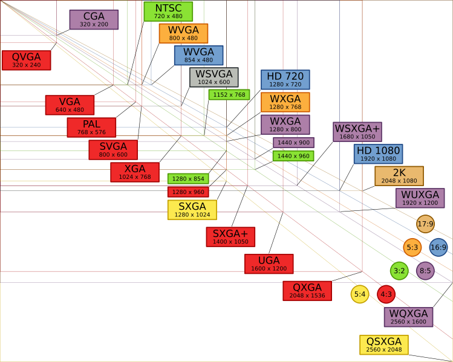
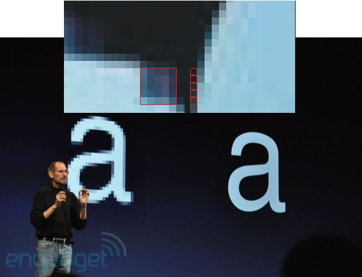

Responsive Web Design
Do I need it? How do I build it?
Presented by Peter Traeg / @ptraeg

About Me:
Peter Traeg
Solutions Architect, Universal Mind
iOS, Android, and Web Developer
Slides / Code: http://traeg.org
Twitter: @ptraeg
About Universal Mind:

What are we going to cover?
- Responsive design - why do I need it?
-
Three major components of responsive design:
- Responsive Layout
- Responsive Images
- Responsive Content
-
Resources for:
- Learning
- Development Tools
Why do I need it?
-
It's not just a desktop world anymore
Your content:
-
Many devices
An explosion of screen resolutions and ratios:
High Resolution (Retina) Displays
{kind=link}
Responsive doesn't just mean layout
- Responsive means performance
-

People on low-bandwidth connections still expect pages to load in 2 or 3 sec
History / Learnings Of Responsive Web Design
Responsive Design:
The Beginning
Ethan Marcotte - A List Apart - Responsive Web Design
May 25, 2010
Key points from that article
- A single site to meet multiple needs: No desire to create an iPhone, an iPad web site, etc. How many sites can you maintain?
- Fluid grids
- Flexible images
- Media queries
Mobile first design
Mobile first design
Luke Wroblewski - Mobile First Book
Design from the core needs of a mobile user first. Then augment that experience as more screen real estate becomes available.
Basic Concepts: Media Queries
Commonly used to detect device-width and pixel density
But you can use it for so much more ...
- orientation - portrait or landscape
- aspect-ratio - 16:9 or 4:3
- height - browser window height
- device-height - device screen height
- media - screen or print
Table of media features
A simple media query in CSS
@media screen and (min-width:480px) {
⋮ one or more rule sets…
} Note that conditions can be combined with and/or and media features prefixed with min- or max-
Loading stylesheets based on media features
@import url(/medium-width.css) screen and (min-width:800px) and (max-width:1280px);
Viewports: adapting to mobile screen sizes
The viewport meta tag
Without this most mobile browsers will use a screen width of 980px.
Controlling viewport scale
Min / Max scale
Generally preventing user scaling of your page should be avoided, but is sometimes used to with Mobile Safari to prevent the page zooming in when you rotate to landscape orientation.
Beware display:none
@media screen and (min-width:480px) and (max-width: 800px) {
.sideBarContent {
display: none;
}
} Even if the screen size causes the display:none to be active remember that all the content in that container will still be fetched (images, etc.). It just won't be displayed. This is an issue for mobile users if your page contains lots of content that will be hidden for mobile users.
What to do about IE?
Media queries are not supported
prior to IE9
Conditional comments
Load a style sheet that would normally be used for desktop browsers.
Use Respond.js
Adds limited media query support for browsers that don't support them.
@media screen and (min-width: 480px){
...styles for 480px and up go here
} Obviously this adds some overhead as the JS file must be loaded and the CSS file parsed before IE can continue. Conditional comments may be more performant, it not less flexible.
More techniques available on Smashing Magazine.
Media Query Access from Javascript
Test media queries from within Javascript
if (window.matchMedia("(min-width: 400px)").matches) {
/* the view port is at least 400 pixels wide */
} else {
/* the view port is less than 400 pixels wide */
}
Or use properties like
window.innerWidth and window.devicePixelRatio
Transition Styles
You can select from different transitions, like:
Cube -
Page -
Concave -
Zoom -
Linear -
Fade -
None -
Default
Transition Styles
You can select from different transitions, like:
Cube -
Page -
Concave -
Zoom -
Linear -
Fade -
None -
Default
Themes
Reveal.js comes with a few themes built in:
Sky -
Beige -
Simple -
Serif -
Night -
Default
* Theme demos are loaded after the presentation which leads to flicker. In production you should load your theme in the <head> using a <link>.
Global State
Set data-state="something" on a slide and "something"
will be added as a class to the document element when the slide is open. This lets you
apply broader style changes, like switching the background.
Custom Events
Additionally custom events can be triggered on a per slide basis by binding to the data-state name.
Reveal.addEventListener( 'customevent', function() {
console.log( '"customevent" has fired' );
} );
Slide Backgrounds
Set data-background="#007777" on a slide to change the full page background to the given color. All CSS color formats are supported.
Image Backgrounds
<section data-background="image.png">Repeated Image Backgrounds
<section data-background="image.png" data-background-repeat="repeat" data-background-size="100px">Background Transitions
Pass reveal.js the backgroundTransition: 'slide' config argument to make backgrounds slide rather than fade.
Background Transition Override
You can override background transitions per slide by using data-background-transition="slide".
Clever Quotes
These guys come in two forms, inline:
“The nice thing about standards is that there are so many to choose from”
and block:
“For years there has been a theory that millions of monkeys typing at random on millions of typewriters would reproduce the entire works of Shakespeare. The Internet has proven this theory to be untrue.”
Pretty Code
function linkify( selector ) {
if( supports3DTransforms ) {
var nodes = document.querySelectorAll( selector );
for( var i = 0, len = nodes.length; i < len; i++ ) {
var node = nodes[i];
if( !node.className ) ) {
node.className += ' roll';
}
};
}
}
Courtesy of highlight.js.
Intergalactic Interconnections
You can link between slides internally, like this.
Fragmented Views
Hit the next arrow...
... to step through ...
any type- of view
- fragments
Fragment Styles
There's a few styles of fragments, like:
grow
shrink
roll-in
fade-out
highlight-red
highlight-green
highlight-blue
Spectacular image!

Export to PDF
Presentations can be exported to PDF, below is an example that's been uploaded to SlideShare.
Take a Moment
Press b or period on your keyboard to enter the 'paused' mode. This mode is helpful when you want to take distracting slides off the screen during a presentation.